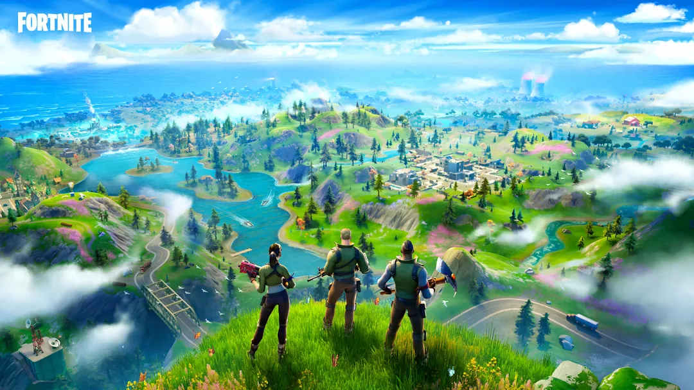

'Um filme Minecraft' é bobo, colorido
e não se leva a sério — assim como o game
Estreia desta quinta-feira (3) tem referências e absurdos suficientes para conquistar fãs do game mais vendido do mundo, mas não deve atrair quem nunca jogou.

'Diablo 4: Vessel of Hatred' expande possibilidades e organiza um dos melhores games de 2023
Expansão lançada nesta segunda-feira (7) melhora o ótimo RPG de ação com nova classe versátil e mudanças radicais na progressão do jogo e do personagem.

'Pokémon GO' e outros jogos são vendidos para empresa árabe em acordo de US$ 3,5 bilhões
A Niantic anunciou um acordo para vender sua unidade de jogos eletrônicos para o grupo saudita Scopely.

Servidores de 'Fortnite', 'Fall Guys' e 'Rocket League' da Epic Games passam por instabilidade
Empresa diz que resolveu dificuldades no acesso a games e na formação de partidas após quatro horas.

'GTA 6' ganha primeiro trailer e vai ser lançado em 2025; ASSISTA
Vídeo era prometido para esta terça (5), mas foi divulgado antes após vazamento nesta segunda (4). Jogo chega em 2025 para Xbox Series X e S e PlayStation 5.

'Garoto de 13 anos se torna o primeiro jogador a vencer o 'Tetris'
Willis Gibson chegou ao nível 157 do jogo, considerado 'imbatível'. CEO do Tetris reconhece vitória e diz que é uma 'conquista extraordinária'.
Microsoft demite quase 2 mil funcionários na área de games; equipes trabalhavam em jogos como 'Call of Duty' e 'Candy Crush'
Cortes ocorreram em empresas recém adquiridas por US$ 69 bilhões Activision, Blizzard e King, além do setor de Xbox, que inclui o videogame, estúdios e o serviço Gamepass.

Filme de 'Invencível' com atores ainda vai acontecer, diz produtor: 'Dar aos fãs da série algo diferente'
'Queremos fazer uma série no Brasil', fala David Alpert. Presidente-executivo da Skybound dá palestra com o copresidente Jon Goldman nesta sexta (28) na gamescom latam.